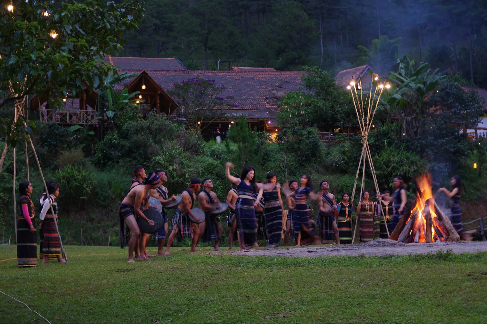
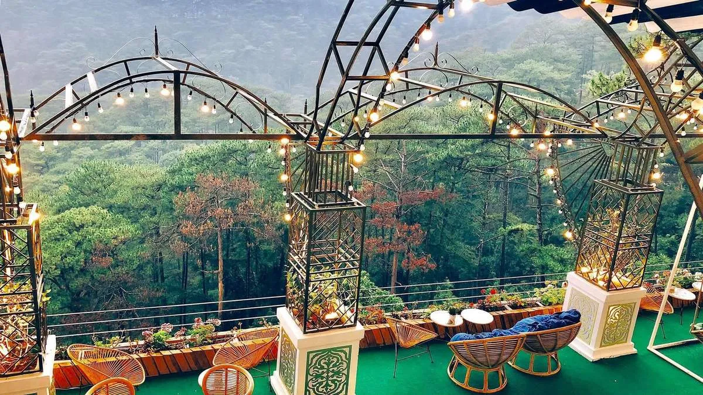
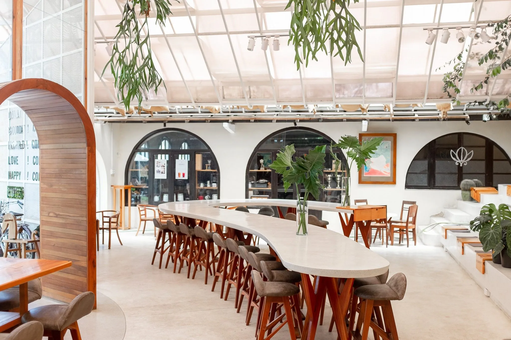
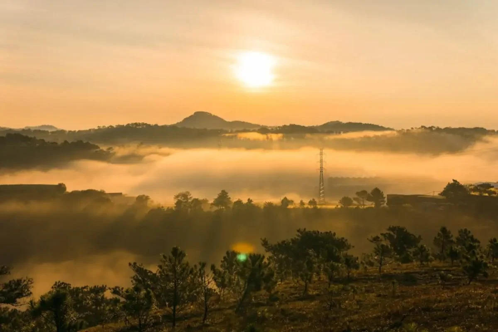
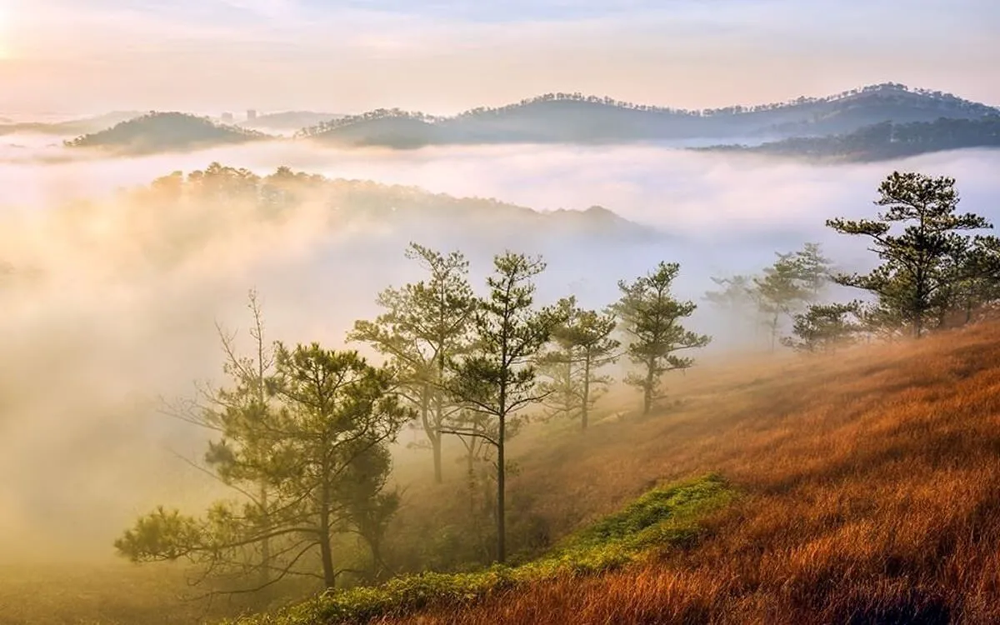

Top 9 địa điểm chill ở Đà Lạt cho trải nghiệm thư giãn & sống ảo

Mục lục bài viết
- 1. Chill giữa thiên nhiên yên bình
- 2. Chill Tại Các Quán Cà Phê View Đẹp
- 3. Chill trải nghiệm săn mây & cắm trại
- 🌥️ Săn mây Đà Lạt tại Đồi Thiên Phúc Đức
- ✨ Đồi Đa Phú – Cắm trại chill Đà Lạt giữa trời sao
- 4. Chill ẩm thực tại quán nướng Đà Lạt giữa rừng thông
- Đà Lạt – điểm đến chill đúng nghĩa cho tâm hồn
Đà Lạt, thành phố ngàn hoa nổi tiếng không chỉ với khí hậu mát mẻ quanh năm mà còn bởi những khoảnh khắc chill đúng nghĩa – nơi bạn có thể hòa mình vào thiên nhiên, nhâm nhi ly cà phê nóng trong không gian lãng mạn hay thưởng thức bữa tối BBQ giữa rừng thông. Nếu bạn đang tìm kiếm những địa điểm chill ở Đà Lạt đẹp mê hồn để "đưa nhau đi trốn" thì hãy cùng khám phá ngay 9 gợi ý sau đây – từ thiên nhiên cho đến các quán cà phê chill Đà Lạt cực chất, chắc chắn sẽ khiến bạn muốn quay lại nhiều lần.
1. Chill giữa thiên nhiên yên bình
🌊 Hồ Tuyền Lâm – Chill giữa thiên nhiên tĩnh lặng
Nằm cách trung tâm thành phố khoảng 7km, Hồ Tuyền Lâm là điểm đến lý tưởng cho những ai muốn rời xa phố thị ồn ào. Với mặt hồ phẳng lặng như gương, bao quanh bởi rừng thông bạt ngàn, nơi đây thích hợp để chị:
👉 Tản bộ dọc hồ
👉 Tổ chức picnic
👉 Chèo sup giữa không gian yên bình
Nếu đang tìm một địa điểm chill ở Đà Lạt gần thiên nhiên thì Hồ Tuyền Lâm là lựa chọn tuyệt vời.

🍃 Đồi chè Cầu Đất – Không gian xanh thư giãn & sống ảo
Đồi chè Cầu Đất không chỉ nổi tiếng với những đồi chè trải dài bạt ngàn, mà còn là nơi lý tưởng để chị có những bức ảnh "triệu like" với background xanh mướt và bầu trời trong trẻo.
Tại đây, chị còn có thể:
👉 Thưởng thức cà phê tại Cầu Đất Farm
👉 Ngắm hoàng hôn lãng mạn giữa đồi chè
👉 Chill với không khí trong lành ở độ cao hơn 1.600m
🌲 Làng Cù Lần – Điểm chill giữa rừng & suối
Nằm sâu trong khu rừng nguyên sinh, Làng Cù Lần là một trong những địa điểm chill Đà Lạt ít người biết nhưng cực kỳ đáng trải nghiệm.
Hoạt động nổi bật:
👉 Cắm trại giữa thiên nhiên hoang sơ
👉 Chèo thuyền trên hồ
👉 Khám phá các trò chơi dân gian và văn hóa Tây Nguyên
Không gian yên tĩnh nơi đây cực phù hợp cho những ai muốn "detox" tâm hồn sau những ngày bận rộn.

2. Chill Tại Các Quán Cà Phê View Đẹp
🌸 Tiệm Cà Phê Túi Mơ To – Quán cà phê chill Đà Lạt đậm chất thơ
Nếu chị đang săn lùng một quán cà phê chill Đà Lạt để sống ảo, Túi Mơ To chính là nơi dành cho chị.
Điểm nổi bật:
👉 Vườn cúc họa mi trắng thơ mộng
👉 Không gian vintage hoài cổ
👉 Góc chụp ảnh siêu xinh, view thung lũng
Đặc biệt, buổi sáng sớm tại quán cực chill, thích hợp để chị nhâm nhi cà phê và tận hưởng bầu không khí Đà Lạt mát lành.
 Ảnh: Tiệm cà phê Túi Mơ To - địa điểm chill tại Đà Lạt - Tiệm Nướng & Chill Xóm Lèo
Ảnh: Tiệm cà phê Túi Mơ To - địa điểm chill tại Đà Lạt - Tiệm Nướng & Chill Xóm Lèo
🌄 Horizon Coffee – Ngắm bình minh & hoàng hôn trên cao
Một trong những quán cà phê view đẹp Đà Lạt nhất hiện nay chính là Horizon Coffee. Nằm trên sườn đồi với thiết kế mở hướng ra thung lũng, nơi đây là tọa độ lý tưởng để:
👉 Ngắm bình minh xuyên mây
👉 Uống cà phê trong không gian rừng thông
👉 Chụp ảnh sống ảo với background "nóc nhà Đà Lạt"
Đây là địa điểm không thể thiếu trong danh sách các quán cà phê chill ở Đà Lạt 2025.

🇪🇺 The Married Beans – Chill kiểu Âu giữa lòng Đà Lạt
Nếu chị thích không gian sang trọng, ấm cúng thì The Married Beans là lựa chọn hoàn hảo. Với:
👉 Thiết kế phong cách châu Âu cổ điển
👉 Góc decor nghệ thuật
👉 Menu cà phê & bánh ngọt chất lượng
Nơi đây rất hợp để chị nghỉ chân, đọc sách, hoặc trò chuyện cùng bạn bè trong khung cảnh cực chill.

3. Chill trải nghiệm săn mây & cắm trại
🌥️ Săn mây Đà Lạt tại Đồi Thiên Phúc Đức
Không thể nói đến chill mà bỏ qua trải nghiệm săn mây Đà Lạt. Và đồi Thiên Phúc Đức là địa điểm săn mây lý tưởng vào mỗi sáng sớm.
Chị nên đi từ 4h30 – 5h sáng để kịp đón:
👉 Biển mây trắng bồng bềnh
👉 Cảnh bình minh rực rỡ sau rừng thông
👉 Những bức ảnh chill huyền ảo như cổ tích
Đây cũng là địa điểm cắm trại lý tưởng cho nhóm bạn hoặc cặp đôi yêu thiên nhiên.

✨ Đồi Đa Phú – Cắm trại chill Đà Lạt giữa trời sao
Cắm trại Đà Lạt không thể không nhắc tới Đồi Đa Phú – một nơi tuyệt vời để dựng lều, đốt lửa trại và ngắm bầu trời đầy sao.
Tại đây, chị có thể:
👉 Mang theo lều, bếp nướng mini
👉 Đón bình minh ngay trước mắt
👉 Chill hết mình giữa thiên nhiên tĩnh lặng
Trải nghiệm này chắc chắn sẽ mang lại cho chị những kỷ niệm đáng nhớ tại Đà Lạt.

4. Chill ẩm thực tại quán nướng Đà Lạt giữa rừng thông
🔥 Tiệm Nướng & Chill Xóm Lèo – Ẩm thực & không gian chill cực phẩm
Nếu bạn đã từng mơ về một bữa tiệc BBQ giữa rừng thông, ánh đèn vàng nhẹ nhàng, nhạc chill và tiếng cười rôm rả thì Tiệm Nướng & Chill Xóm Lèo chính là nơi hiện thực hóa giấc mơ đó. Không gian tại đây cực kỳ ấm cúng, décor xinh xắn, vừa đủ riêng tư lại vẫn giữ được chất Đà Lạt mộc mạc.

Tại đây bạn có thể thưởng thức:
👉 Ba chỉ bò cuộn kim châm
👉 Tôm nướng muối ớt
👉 Bò tảng nướng phô mai
👉 Lẩu hải sản đậm đà
🎶 Bên cạnh đó, âm nhạc nhẹ nhàng cùng view rừng thông buổi tối lung linh ánh đèn sẽ khiến bạn không thể rời bước.
📍 Địa chỉ: 113 Huỳnh Tấn Phát, Phường 11, Đà Lạt
📌 Google Map: https://maps.app.goo.gl/W4ygihLS8LQ1YiSK8
📞 Hotline: 076.45.27.336 – 08.99.42.84.34 – 0902.91.22.40
💬 Inbox đặt bàn: https://m.me/nuongxomleo
Nếu chị đang tìm quán nướng Đà Lạt chill để vừa ăn ngon vừa "sống chậm", thì Tiệm Nướng & Chill Xóm Lèo chắc chắn là điểm đến không thể bỏ lỡ.
Đà Lạt – điểm đến chill đúng nghĩa cho tâm hồn
Từ những rừng thông hoang sơ, mặt hồ phẳng lặng, đồi chè xanh ngát đến những quán cà phê view đẹp hay các địa điểm săn mây, cắm trại Đà Lạt – thành phố mộng mơ này chưa bao giờ khiến người ta thôi yêu. Mỗi điểm đến là một trải nghiệm riêng, mỗi khoảnh khắc ở Đà Lạt đều có thể trở thành ký ức đáng nhớ.
Nếu bạn đang lên kế hoạch cho một hành trình thư giãn đúng nghĩa thì đừng bỏ qua 9 địa điểm chill ở Đà Lạt mà chúng tôi vừa chia sẻ. Và đừng quên ghé Tiệm Nướng & Chill Xóm Lèo để thưởng thức ẩm thực ngon giữa không gian đậm chất "chill" nhé!